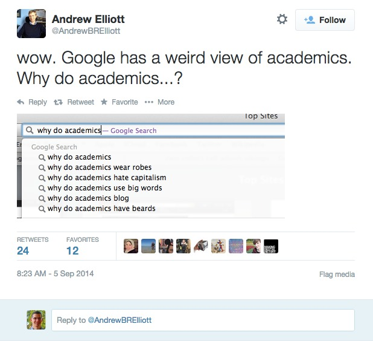
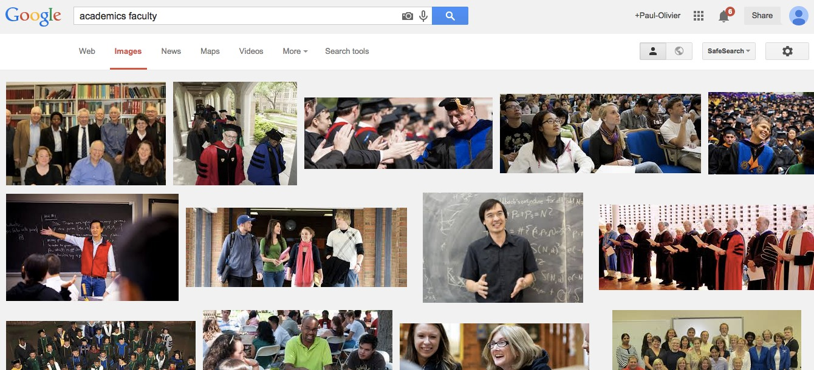

The academic (social) machine
There was recently a picture circulating on Twitter, like pictures do.
This is, to say the least, a skewed view of academia, although I am certainly not the best placed to say thatL I tend to have a beard, use big words and have recently started blogging! I did wear robes in Oxford. This is however a good opportunity to show how algorithmic bias works. First off, where does the bias originate here? As I explained before in my post on social teaching machines, autocompletion surfaces information collected previously. The information in this case is collected in various ways, most notably by looking at previous searches. I would posit that the way the information is collected leads itself to the bias. Some of those biases are more serious, as is amply demonstrated by any search of the form "Why do A people like", where A can be any of {asian, white, black}. Only one of those autocompletes works for me, the other two give nothing (presumably because the output is too vile and has been hand blocked). So these stereotypes, surfaced by humans, are inserted into the huge Google machine. Let's see where this leads.
In the case of autocompletion, the impact is certainly weak, but it might correlate with other biases, underscoring a more ingrained problem. Let's go back to Google's view of academia: what does the output of a Google Image Search of "academics faculty" return? The link in the previous sentence is user agnostic (but its output will be personalized by Google once you click, unless you use privacy conscious tools). Here is the view I get:
Yours should be different: most probably, Terence Tao, the short-sleeved mathematician in the middle row is further down in yours. This is reasonable, and explained by Christian Sandvig in the Social Media Collective blog in a beautiful post called Show-and-Tell: Algorithmic Culture: since I am a mathematician, Google gives Tao a bump [1]. And beyond that? Well, Google really thinks that academics wear robes, and perpetuates this bias also visually, not just in autocomplete. One consequence is that when humans need to illustrate something (a blog, an educational resource,...) it actually requires training and effort not to succumb to that bias. And of course this intermediate step of choosing a picture could itself be automated in various ways.
| [1] | This effect, of showing me Tao higher than average, might be reasonable in this case, but it could also lead to some form of filter bubble if there were (many) more mathematicians. |
Comments
Comments powered by Disqus